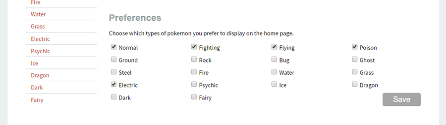
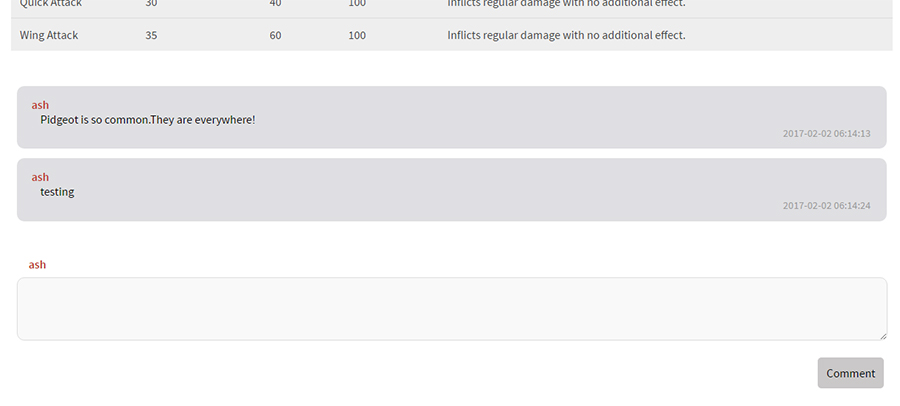

HTML, CSS, PHP, AJAX, MySQL
Full stack web developer
Summer 2016
Pokemon Database is a site where users can not only see the stats of over 700 pokemon but also favourite, comment and socialize with other users who are fans of this series.
As a course project, I was assigned to create a interface system that users would want and with Pokemon Go, Pokemon Sun and Pokemon Moon about to come out during that time I figured that a Pokemon Database would be a nice to help gather users together. Users can filter and sort through various stats of the Pokemon and make comments to let other people know more fun facts. Users can also create accounts so they can create a profile to show off which ones are their favourites or ones they have caught! To furhter personalize their page, they can change their preferences to adjust their home page.
Near the end of the project, AJAX was also added used to give users a more fluid experience. Rather than needing to refresh the page constantly to get updated results, I used AJAX to sort the grid as well as creating a commenting system with it as well so users were able to communicate with others synchronously.
Through this project I was able to learn about relational databases and how large amounts of data are managed for small projects like these or on a larger scale for companies. I also picked up on backend developing skills since I did not have much experience with PHP and MySQL. This project also sparked my interest in full stack web development since being working and manipulating with the databases resulted in more interactive experience for users.